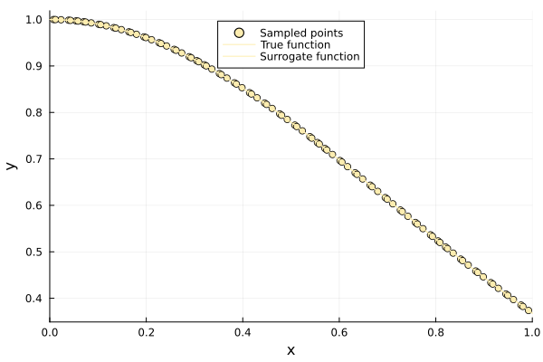
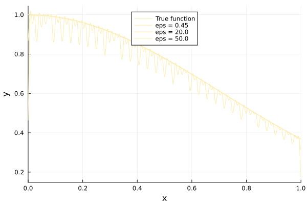
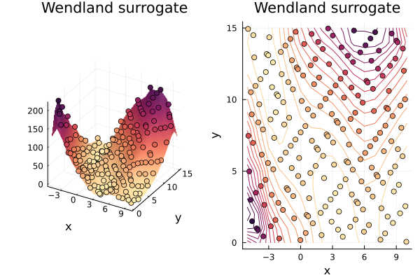

Wendland Surrogate Tutorial
The Wendland surrogate uses a compactly supported radial kernel: a sample point influences predictions only within a finite radius of it. Most kernel pairs therefore contribute nothing, the interpolation matrix is sparse, and the surrogate allocates much less memory than a globally supported one. The coefficients are found with conjugate gradients; if that solve does not converge within maxiters, a warning is emitted and the fit should not be trusted.
Surrogates.Wendland — Type
Wendland(x, y, lb, ub; eps = 1.0, maxiters = 300, tol = 1.0e-6)Compactly supported Wendland radial basis surrogate, using the C² kernel (smoothness k = 1). A sample point's kernel vanishes at input distance 1 / eps and beyond, so eps is the reciprocal of the support radius.
Wendland solves a sparse interpolation system with conjugate gradients, and warns if that solve does not converge within maxiters. The fitted surrogate is callable as wendland(x_new) and can be updated with update!(wendland, x_new, y_new).
Fields
x: training inputs.y: training responses.lb: lower bound of the input domain.ub: upper bound of the input domain.coeff: fitted interpolation coefficients.maxiters: maximum number of conjugate-gradient iterations.tol: relative tolerance used by conjugate gradients.eps: reciprocal of the kernel support radius.
Arguments
x: sample locations.y: observed values atx. Responses must be scalars; vector-valued responses are not supported.lb: lower bound of the input domain.ub: upper bound of the input domain.
Keywords
eps: reciprocal of the kernel support radius; a sample point influences predictions within input distance1 / epsof it.maxiters: maximum iterations for the coefficient solve.tol: relative tolerance for the coefficient solve.
Returns
A Wendland surrogate satisfying the generic surrogate interface.
$f = x -> exp(-x^2)$
using Surrogates
using PlotsWe sample f at 100 points between 0 and 1 using the sample function. The sampling points are chosen using a Sobol sequence, which is done by passing SobolSample() to sample.
n = 100
lower_bound = 0.0
upper_bound = 1.0
f = x -> exp(-x^2)
x = sample(n, lower_bound, upper_bound, SobolSample())
y = f.(x)100-element Vector{Float64}:
0.999450834440385
0.7603420992361533
0.5497973262437404
0.9279586861644862
0.8532075516884395
0.4461099014964117
0.6567372979278094
0.9782072773172401
0.956480737427535
0.6032448395626249
⋮
0.8397106792180511
0.9177496036501366
0.5332315942095883
0.7446692912821248
0.9981553899116735
0.996572659247785
0.7319617814344029
0.5200533624689974
0.9091637095195747Building Surrogate
eps is the reciprocal of the support radius: a sample point influences predictions within distance 1 / eps of it, and nowhere else. Here eps = 0.45 gives a radius of about 2.2, so every sample point reaches across the whole domain.
wend = Wendland(x, y, lower_bound, upper_bound, eps = 0.45)(::Wendland{Vector{Float64}, Vector{Float64}, Float64, Float64, Vector{Float64}, Int64, Float64, Float64}) (generic function with 1 method)plot(x, y, seriestype = :scatter, label = "Sampled points",
xlims = (lower_bound, upper_bound), legend = :top)
plot!(f, label = "True function", xlims = (lower_bound, upper_bound), legend = :top)
plot!(wend, label = "Surrogate function", xlims = (lower_bound, upper_bound), legend = :top)
Choosing the support radius
Shrinking the support makes each prediction depend on fewer sample points. The surrogate still interpolates — it reproduces every sampled response whatever eps is — but between the samples it decays towards zero once the radius drops below the sample spacing:
grid = range(lower_bound, upper_bound, length = 400)
rms(v) = sqrt(sum(abs2, v) / length(v))
for eps in [0.45, 2.0, 20.0, 50.0]
w = Wendland(x, y, lower_bound, upper_bound, eps = eps)
println("eps = ", eps,
" radius = ", round(1 / eps, digits = 3),
" RMSE off the samples = ", round(rms([w(v) - f(v) for v in grid]), digits = 6),
" max error at the samples = ",
round(maximum(abs(w(x[i]) - y[i]) for i in eachindex(x)), digits = 8))
endeps = 0.45 radius = 2.222 RMSE off the samples = 2.0e-6 max error at the samples = 2.46e-6
eps = 2.0 radius = 0.5 RMSE off the samples = 9.4e-5 max error at the samples = 2.14e-6
eps = 20.0 radius = 0.05 RMSE off the samples = 0.008494 max error at the samples = 2.18e-6
eps = 50.0 radius = 0.02 RMSE off the samples = 0.055141 max error at the samples = 1.3e-7plot(f, label = "True function", xlims = (lower_bound, upper_bound), legend = :top)
for eps in [0.45, 20.0, 50.0]
w = Wendland(x, y, lower_bound, upper_bound, eps = eps)
plot!(w, label = "eps = $eps", xlims = (lower_bound, upper_bound))
end
plot!()
Wendland Surrogate Tutorial (ND)
The surrogate works the same way in more dimensions; only the bounds change shape. Note that the kernel exponent depends on the input dimension, so the same eps gives a slightly different profile.
using Surrogates
using Plots
default(c = :matter, legend = false, xlabel = "x", ylabel = "y")
function branin(x)
x1, x2 = x[1], x[2]
a, b, c, r, s, t = 1.0, 5.1 / (4 * pi^2), 5 / pi, 6.0, 10.0, 1 / (8 * pi)
return a * (x2 - b * x1^2 + c * x1 - r)^2 + s * (1 - t) * cos(x1) + s
end
lower_bound = [-5.0, 0.0]
upper_bound = [10.0, 15.0]
xys = sample(200, lower_bound, upper_bound, SobolSample())
zs = branin.(xys);200-element Vector{Float64}:
148.0560267554004
97.738872509658
19.519858804218114
15.334535299996283
19.58430028520217
85.33503631274715
37.86282824541388
7.016503458498236
94.85700432033855
60.76990376657528
⋮
42.775586899193506
217.38045214510993
43.57743656698652
35.711686855359176
45.44560513224651
21.76919408354652
166.91843103721047
15.128589307843406
1.49260763116982The domain is about 15 units across, so a support radius of 5 (eps = 0.2) lets each sample point reach a useful neighbourhood without covering everything.
wend_ND = Wendland(xys, zs, lower_bound, upper_bound, eps = 0.2)
maximum(abs(wend_ND(xys[i]) - zs[i]) for i in eachindex(xys))0.00015098172733729598xs = [xy[1] for xy in xys]
ys = [xy[2] for xy in xys]
x, y = -5.0:10.0, 0.0:15.0
p1 = surface(x, y, (x, y) -> wend_ND([x y]))
scatter!(xs, ys, zs, marker_z = zs)
p2 = contour(x, y, (x, y) -> wend_ND([x y]))
scatter!(xs, ys, marker_z = zs)
plot(p1, p2, title = "Wendland surrogate")